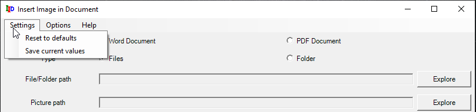
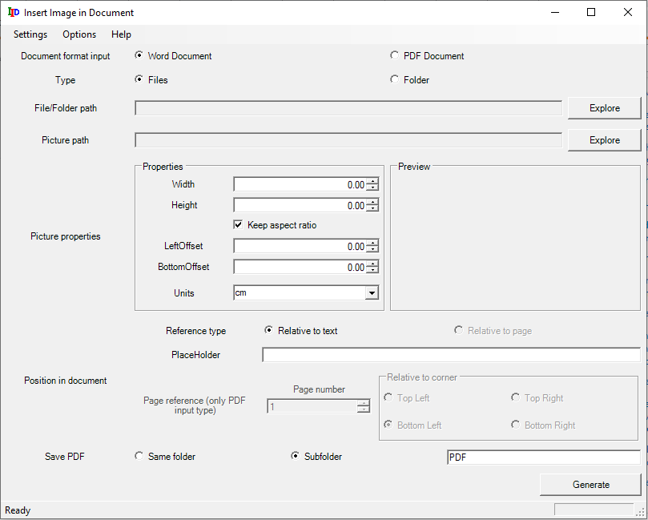
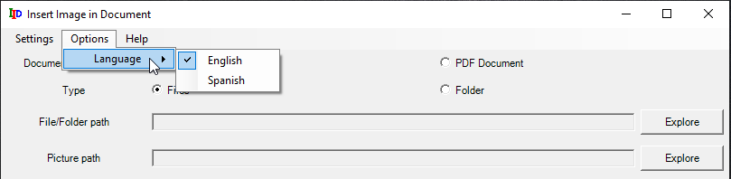
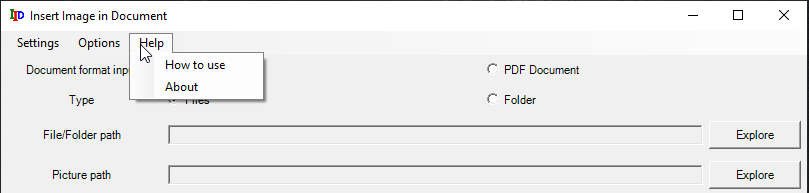

Use of the Menu in Graphical Interface
The software has some menus that adds complementary functionalities to the main purpose of the software. Those functionlities are:
Settings Menu: Save preferences
The menu Settings is oriented to two main functions: save the current values in the GUI and restore to the default.

- Reset to defaults. It resets the default options for all the fields in the graphical interface.

- Save current values. It saves the current values in the options and fields present in the graphical interface as, the next you open the session it will remain. It is also triggered when closing the software.
Options Menu: Change language
The Options menu is used to change the language in the interface. It currently supports only two languages: english and spanish. It will only apply to the inner controls until you restart the software, when all the controls and menus will have the selected language.

Help Menu
This menu is employed to show information about the software and how to use the graphical interface.
